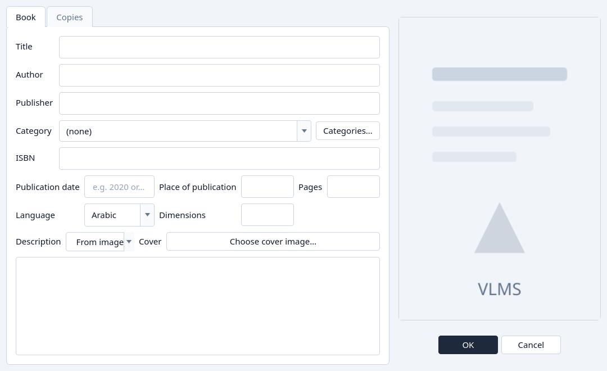
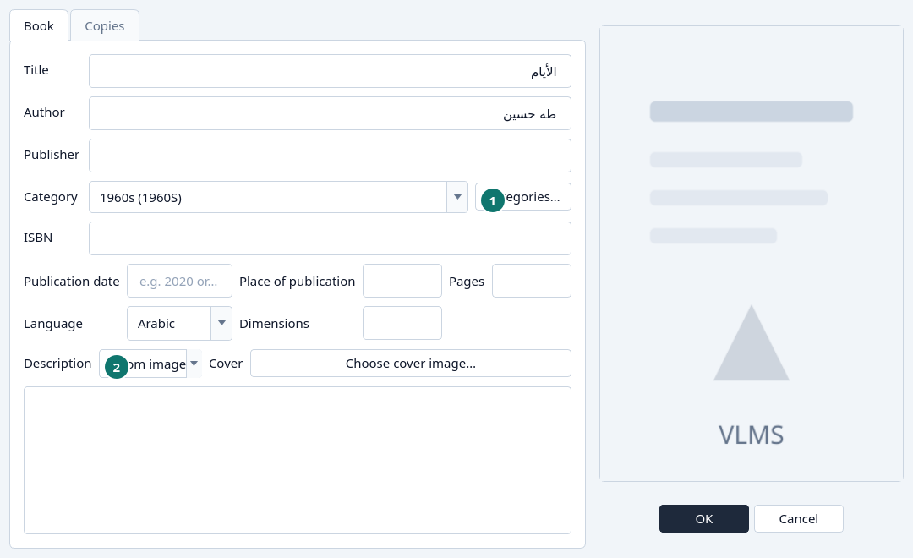
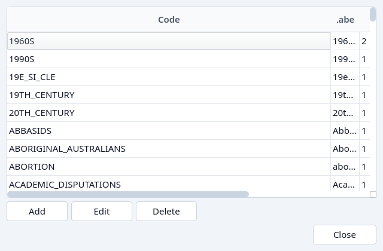
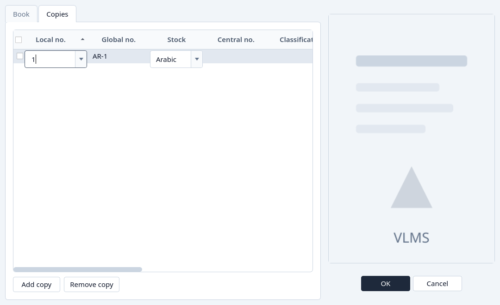

Add a book
Add a title, its copies, and a cover.
Add a title
Click Add Book.
The dialog opens on the Book tab. Title and Language are required. The other fields can wait.

Add Book, as it opens. Fill the Book tab.
Type the title and the author. Choose the language. Choose a category, or leave (none).

A title, an author, a language, and a category. - Categories… opens the list of categories without leaving the book.
- From image reads a clear photograph and can fill the title, the author, and the description. It needs a readable picture. It may be unavailable on this computer.
Add a category if it is not in the list.
Categories… lists every category, with Add, Edit, and Delete. Close it with Close, then pick the category on the book.

The category list. Choose a cover if you have one.
Choose cover image… on the Cover row. The picture is stored with the title.
Open the Copies tab.
Add copy appends a line. A new title needs at least one copy. The line takes the next local number unless you pick another. See Reuse a local number.

The Copies tab with a new line. 
The local-number editor: the next number, then the free numbers. Click OK.
Cancel discards the dialog. Nothing is saved until OK.


What if…
- The title is empty, or the language is missing. The dialog stays open and names the field.
- The local number is already used by another copy of the same stock. Choose another number, or pick a free one from the list.
- The number was reserved for a copy that is still being edited. Save or cancel that book first.